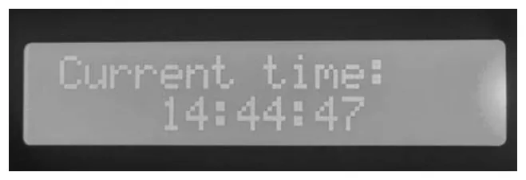

There is more to a GPS than finding a location; the system also transmits time data that can be used to make a very accurate clock.
The Hardware
For this project, we’ll use the same hardware from Project 44.
The Sketch
Enter the following sketch to build a GPS clock:
// Project 45 - Creating an Accurate GPS-based Clock
#include <TinyGPS.h>
#include <LiquidCrystal.h>
LiquidCrystal lcd( 8, 9, 4, 5, 6, 7 );
// Create an instance of the TinyGPS object
TinyGPS gps;
void getgps(TinyGPS &gps);
void setup()
{
Serial.begin(4800);
lcd.begin(16, 2);
}
void getgps(TinyGPS &gps)
{
int year,a,t;
byte month, day, hour, minute, second, hundredths;
❶ gps.crack_datetime(&year,&month,&day,&hour,&minute,&second,&hundredths);
❷ hour=hour+10; // correct for your time zone
if (hour>23)
{
hour=hour-24;
}
lcd.setCursor(0,0); // print the date and time
❸ lcd.print("Current time: ");
lcd.setCursor(4,1);
if (hour<10)
{
lcd.print("0");
}
lcd.print(hour, DEC);
lcd.print(":");
if (minute<10)
{
lcd.print("0");
}
lcd.print(minute, DEC);
lcd.print(":");
if (second<10)
{
lcd.print("0");
}
lcd.print(second, DEC);
}
void loop()
{
byte a;
if ( Serial.available() > 0 ) // if there is data coming into the serial line
{
a = Serial.read(); // get the byte of data
if(gps.encode(a)) // if there is valid GPS data...
{
getgps(gps); // then grab the data and display it on the LCD
}
}
}This example works in a similar way to Project 44, except that instead of extracting the position data, the sketch extracts the time (always at Greenwich Mean Time, more commonly known as UTC) at ❶. At ❷, you can either add or subtract a number of hours to bring the clock into line with your current time zone. The time should then be formatted clearly and displayed on the LCD at ❸. Figure 13-9 shows an example of the clock.
